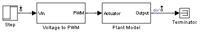
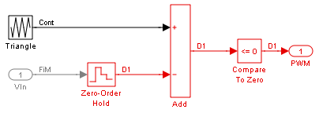
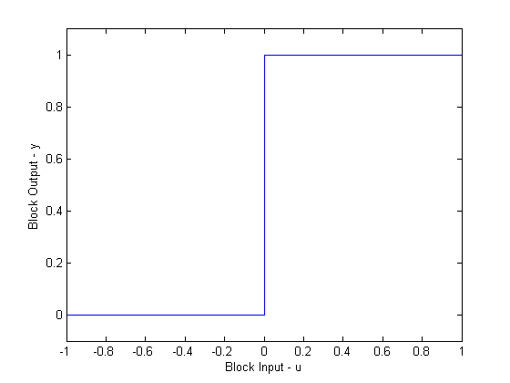
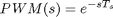
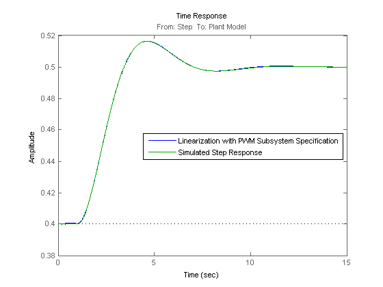

Specifying Custom Linearizations for Simulink Blocks
Contents
Introduction
The command LINEARIZE in Simulink® Control Design™ gives a linear approximation of a Simulink model using an exact linearization approach. This linearization is valid in a small region around a given operating point. This approach works well for most Simulink models, but in some cases you need to modify the exact linearization approach to take into account the effects of discontinuities or approximate the dynamics of derivative or delay action. Many built-in Simulink blocks, such as saturation or the dead zone nonlinearities, provide the ability to select "Treat as gain when linearizing" to control this behavior. In this demonstration you specify a custom linearization for a subsystem to approximate the linearization of a PWM signal.
Linearizing a Model with a PWM Generation Subsystem
The following example model has a subsystem scdpwm/Voltage to PWM, which models a PWM signal that enters a plant model.
mdl = 'scdpwm';
open_system(mdl);
 When you linearize this model using the standard configuration, the resulting linear model has a gain of zero.
io = getlinio(mdl); sys = linearize(mdl,io)
d =
Step
Plant Model 0
Static gain.
The block scdpwm/Voltage to PWM/Compare To Zero causes this linearization to be zero.
pwmblk = 'scdpwm/Voltage to PWM';
open_system(pwmblk)
 The linearization is zero because the block represents is a pure discontinuous nonlinearity.
u = [-1:0.1:0,0:0.1:1]; y = [zeros(11,1);ones(11,1)]; plot(u,y) xlabel('Block Input - u') ylabel('Block Output - y') set(gca,'YLim',[-0.1 1.1])
Specifying a Custom Linearization for the PWM Subsystem
With Simulink Control Design, you can control the linearization of the blocks in a Simulink model. You can specify the linearization of a block using:
- Matrices
- Linear time invariant models, such as transfer functions or state space
- Robust Control uncertain parameters/state space models
In this example, the PWM subsystem contains a time delay

This time delay accounts for the duty cycle frequency of the PWM signal which is at 100 Hz. To specify the delay on the subsystem scdpwm/Voltage to PWM right click on the block and select Linear Analysis->Specify Linearization. The following block dialog in which you to specify the delay dynamics opens.

The following code is equivalent to entering the delay into the specification dialog.
set_param(pwmblk,'SCDEnableBlockLinearizationSpecification','on'); rep = struct('Specification','ss(1,''OutputDelay'',1/100)',... 'Type','Expression',... 'ParameterNames','',... 'ParameterValues',''); set_param(pwmblk,'SCDBlockLinearizationSpecification',rep);
Linearizing the model with the specified subsystem linearization now gives the expected result.
opt = linoptions('SampleTime',0);
sys = zpk(linearize(mdl,io,opt))
Zero/pole/gain from input "Step" to output "Plant Model":
1
exp(-0.01*s) * -------------
(s^2 + s + 1)
Comparing the Linearization and Simulation
You can compare the linearization of the model to the actual linearization using a frest.createStep signal. It is important to note that the specification of the linearization does not need to be removed to simulate using the original model configuration. The linearization specification does not have an impact on simulation, only linearization. Visual inspection shows that the linearization accurately represents the dynamics.
cla instep = frest.createStep('Ts',1/10000,'StepTime',1,... 'StepSize',1e-1,'FinalTime',15); [sysf,simoutstep] = frestimate(mdl,io,instep); frest.simCompare(simoutstep,sys,instep) legend('Linearization with PWM Subsystem Specification',... 'Simulated Step Response','Location','East')
Other Applications of Specifying Custom Linearizations for Simulink Blocks
Block linearization specification is not limited to linear time invariant models. With the Robust Control Toolbox™, you can specify uncertain parameters and uncertain state space (USS) models for blocks in a model. The resulting linearization is then an uncertain model. The demonstration "Linearization of Simulink models with Uncertainty" shows how to compute a linearization with uncertainty (Requires Robust Control Toolbox™).
You can also perform analysis of models with discrete controllers and continuous plant dynamics in the continuous domain. See the demo "Modeling Computational Delay and Sampling Effects" for more details.
Close the Simulink model
bdclose(mdl)